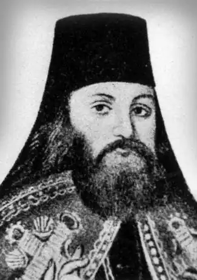
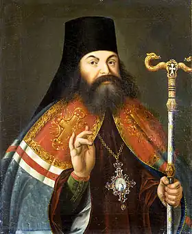

Прокопович Феофан
(1681-1736)
церковний і громадський діяч, письменник, учений Феофан Прокопович (Єлеазар) народився у Києві 7 червня 1681 року в родині крамаря Церейського. Після смерті батька й матері його опікуном став дядько по матері Феофан Прокопович, намісник київського Братського Богоявленського монастиря, професор і ректор Києво-Могилянського колегіуму. Дядько віддав Єлеазара до початкової школи при монастирі. По закінченні її, Єлеазар стає студентом Києво-Могилянського колегіуму. В роки навчання був одним з кращих учнів, добре опанував церковнослов’янську, грецьку та латинську мови, не раз перемагав у наукових диспутах, крім традиційних для колегіуму дисциплін вивчав твори європейських філософів. Після смерті дядька, Феофана Прокоповича, його підтримував київський митрополит Варлаам Ясинський. 1698 року Єлеазар закінчує Києво-Могилянський колегіум і вирішує продовжити освіту. Того самого року вступає до Володимир-Волинського уніатського колегіуму, живе у базиліянському монастирі, де приймає унію й постригається у ченці під іменем Єлисея. Уніатський володимир-волинський єпископ Заленський помітив незвичайні здібності молодого ченця і сприяв його переведенню до Римської католицької академії св. Афанасія, в якій готували богословів для поширення католицтва серед прихильників східного православ’я. У Римі Єлисей користувався ватиканською бібліотекою, крім богословських наук вивчав твори древніх латинських та грецьких філософів, істориків, пам’ятки старого й нового Рима, засади католицької віри та організації папської церкви, знайомився з творами Томмазо Кампанелли, Галілео Галілея, Джордано Бруно, Миколая Коперника. 28 жовтня 1701 року залишає Рим, не закінчивши повного курсу академії. Пішки проходить Францію, Швейцарію, Німеччину, деякий час студіює в місті Галле, де знайомиться з ідеями реформаторства. 1704 року повертається в Україну, спершу в Почаївський монастир, потім у Київ, зрікається католицької віри, проходить епітимію і постригається у православні ченці, прийнявши ім’я Феофана в пам’ять про свого дядька. З 1705 року викладав риторику, піїтику та філософію у Києво-Могилянському колегіумі, уклав курс піїтики та риторики, написав трагікомедію "Володимир", присвятивши її гетьману Івану Мазепі. Водночас пише й виголошує богословсько-філософські проповіді, завдяки яким був помічений київським генерал-губернатором Д.Голіциним та О.Меншиковим. 1707 року стає префектом Києво-Могилянської академії. 1711 року його беруть у складі почту царя Петра I в Прутський похід, під час якого в Яссах він виголошує з нагоди річниці Полтавської битви проповідь, яка сподобалася цареві. Після повернення до Києва Феофана Прокоповича призначено ректором Києво-Могилянської академії і професором богослов’я. Водночас він стає ігуменом Братського монастиря. 1716 року за бажанням Петра I Прокопович переїжджає до Петербурга. 1718 року призначений єпископом псковським і нарвським, стає наближеним до царського двору. Пише на замовлення царя книги "Апостольська географія", "Коротка книга для навчання отроків", "Духовний регламент". 1721 року призначений віце-президентом найсвятішого синоду, головою якого був виходець з України Стефан Яворський. 1724 року Феофан за наказом царя пише указ про устрій чернецтва, який упорядковував і регламентував монастирське життя за взірцем давніх монастирських статутів, спрямовував чернече життя на користь суспільству, бере активну участь у здійсненні реформ у Росії. Після смерті Петра I сприяє сходженню Катерини I на трон. 1725 року Прокоповича призначено архієпископом новгородським і першим членом синоду, фактичним главою Російської православної церкви. Він бере участь в організації Російської Академії наук, очолює так звану "учену дружину" діячів культури, до якої належали Татіщев, Кантемир та ін. Останнє десятиріччя життя майже залишив діяльність вченого, зазнавав переслідувань з боку противників петровської політики, які плели навколо Прокоповича інтриги, слали в синод доноси, намагаючись позбавити його високого становища в церковній ієрархії. 19 вересня 1736 року помер у Новгороді, похований у новгородському Софійському соборі. Життя і діяльність Феофана Прокоповича чітко ділиться на два періоди: київський, коли він виступав як блискучий учений, письменник, філософ, педагог, та петербурзький, коли йому доводилося бути здебільшого церковним та політичним діячем. Перший період припадає на 1705—1716 роки, коли Феофан Прокопович викладав у Києво-Могилянській академії риторику, піїтику, арифметику, геометрію, філософію та богослов’я. Йому належить заслуга того, що він, як і багато з послідовників Петра Могили, був одним з прихильників відходу від схоластичних методів викладання. Прокопович, на відміну від багатьох інших київських викладачів, був знайомий з працями відомих тогочасних європейських філософів і першим почав пропагувати в академії філософію Декарта, Локка, Бекона, Спінози, Гоббса, які вели рішучу боротьбу за очищення й перебудову розуму від середньовічної схоластики, пустого красномовства, сліпого наслідування псевдонаукових догм, і закликав йти до осягнення істини шляхом знань. Феофан Прокопович визнавав Бога як основу всього сущого, але водночаc він вважав, що "матерію не можна ніколи ні створити, ні зруйнувати, ні зменшити, ні збільшити", оскільки вона розвивається на грунті власних, закладених природою закономірностей. Він відкидав погляди, за якими матерія не має власного існування, називав вчення Платона "казкою", а його ж таки вчення про ідеї — пустим маренням, бо вважав, що ніщо не виникає з нічого і світ є матеріальним. Матерія єдина і в левові, і в камені, і в людині. Виникнення й знищення, "кругообіг небес", рух елементів, активність і застиглість, інші стани й можливості речей відбуваються завдяки рухові, який є основою усього. Феофан Прокопович рішуче виступив проти марновірства і навіть наважувався дати критичний аналіз Святого Письма. У складеному ним самим курсі лекцій з філософії він твердить, що "поза межами цього світу нічого немає". На підтвердження вчений аналізує систему Коперника та вчення Галілея. Прагнучи дати наукове пояснення природним явищам, він використовував у своїх лекціях наукові експерименти з використанням мікроскопа, телескопа, армілярної сфери, основаної на вченні Коперника. Підтримуючи вчення Коперника та Галілея, яких свого часу заборонила папська інквізиція, Прокопович виступав за право кожного пізнавати й захищати істину, прагнув зблизити філософію з точними науками, пов’язати логіку й риторику з практикою. Прокопович вважав, що між положеннями Святого Письма, законами природи й розумом людини не має бути суперечностей, оскільки вони гармонійно влаштовані самим Творцем. Текст Святого Письма слід розуміти алегорично, відповідно до рівня уявлень і наукових знань часу. Твердження науки залишаються непорушними, якщо вони випливають з істинних посилань. Коли ж виникають суперечності між текстами Святого Письма і даними науки, Прокопович вважає, що слід дотримуватися науки, для якої Святе Письмо не може бути перешкодою. Феофан Прокопович обстоював думку багатьох тогочасних вчених Європи, що технічні досягнення повинні стати надбанням усього людства, закликав не боятися нового, брати в інших народів усе найкраще. Він високо цінував і використовував у своїй діяльності принцип сумніву й заперечував сліпу віру в догми та авторитети в науці. Він засуджував легковажність в оперуванні фактами історії, вважаючи, що в цій науці все має відтворюватися так, як було насправді. Феофан Прокопович, укладаючи курси лекцій, які він читав у Києво-Могилянській академії, значно розширив, порівняно з попередниками, курси фізики, логіки, геометрії, започаткував викладання математики й фізики на рівні кращих взірців європейської навчальної літератури того часу. Теоретичні засади й скерованість на сучасні досягнення науки було продовжено в наукових курсах наступних після Прокоповича викладачів Києво-Могилянської академії — С.Кулябки, М.Козачинського, Г.Кониського, Й.Томилевича, Т.Яновського, які зробили значний внесок у розвиток української науки. У петербурзький період життя й творчості, коли Феофанові Прокоповичу доводилося бути більше церковним діячем і політиком, ніж вченим, він також прагнув у нових, уже російських умовах, де панували схоластика й сліпе дотримування встановлених канонів, примирити науку з вірою, створити таку богословську систему, яка б не заперечувала розвитку науки і припускала пріоритет світського начала над церквою в суспільстві. Саме ці погляди лягли в основу петровських реформ у Росії, активну діяльність у яких брав Прокопович. Спрямовуючи й обгрунтовуючи реформи Петра I, Феофан Прокопович був організатором так званої "вченої дружини", спілки однодумців у складі А.Кантемира, В.Татіщева, І.Черкаського та ін., які теоретично обгрунтовували й захищали нововведення Петра I й підтримували розвиток науки, ремесла, торгівлі, мистецтва, запроваджували гуманістичні елементи в освіту. Людина, вважав Прокопович, велична й славна своїм розумом, чеснотами. Вона є ніби другим, величним і досконалим, рівним самій природі, творінням. Основою діяльності людини має бути активність, чесність, сумлінність у виконанні обов’язків. Характер діяльності людини Прокопович пов’язував з її свободою. Завдяки розуму людина усвідомлює не тільки свободу, а й діяння, що з неї випливають. Водночас людина має завдяки своєму розумові і свободі вибору вільно обирати між добром і злом. Відштовхуючись від уявлень про природне походження держави, Прокопович заперечував теологічну концепцію суспільного розвитку як Божого промислу й обстоював тезу, що світська влада повинна стояти вище церковної, у чому знаходив і тоді, в особі голови синоду Стефана Яворського, і в наш час багатьох противників. Однак його настанови про те, що кожний суспільний стан, зокрема й церковний, має бути корисний державі, й донині залишилися неспростовними. Водночас, як син свого часу, Прокопович обстоював ідею одноосібного правління, тобто державний абсолютизм. При цьому він вважав, що державу має очолювати освічений монарх, "філософ на троні", покликаний звершувати просвітницькі ідеали.